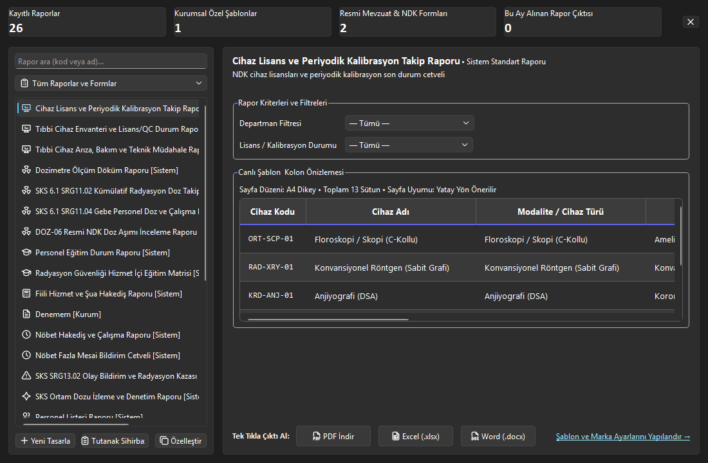
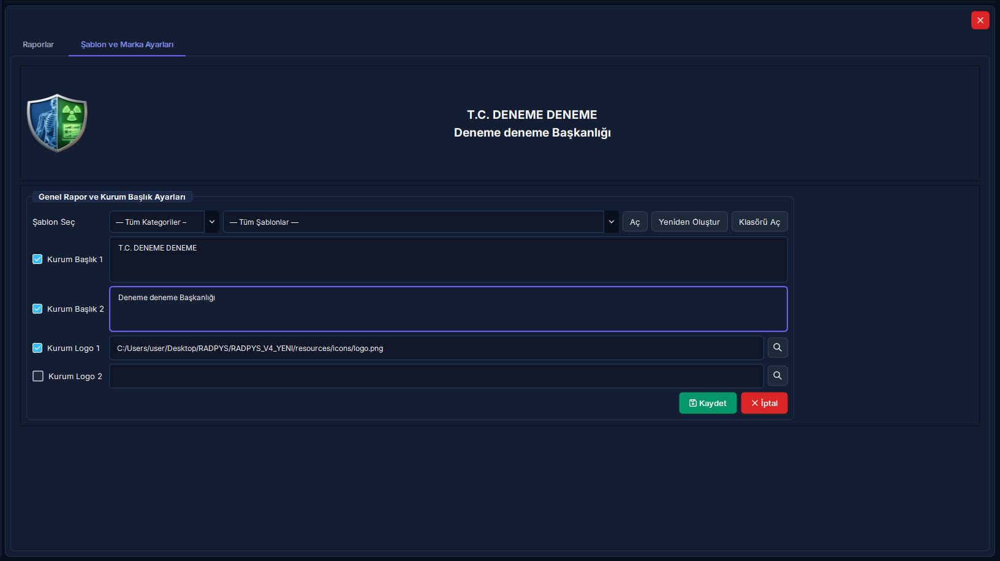

Raporlama ve Tutanak Yönetim Merkezi
SKS 6.1 ve NDK denetimleri için 27 aktif resmi mevzuat raporunu ve 25 hazır veri kaynağını tek merkezde toplar; dinamik dikey/yatay A4 PDF ve Excel (.xlsx) çıktıları üretir, Şablon Tasarım Stüdyosu ve kurumsal çift logo ayarlarını yönetir, 11 modül kapsamlı Evrensel Tutanak Sihirbazı ile kilitli PDF tutanaklar oluşturup Resmi Tutanaklar Kasası (v1 taslak → v2 imzalı) ile 2 aşamalı SHA-256 mühürlü HEK tasfiyesini güvence altına alır.
Kısa Reçete: Resmi Rapor Çıktısı veya Çoklu Tutanak Üretme
Seçili dönem/birim kriterlerine göre denetime hazır A4 PDF veya Excel (.xlsx) raporu almak ya da birden çok cihaz/RKE için tek resmi PDF heyet tutanağı üretmek.
Rapor Merkezinde listeden şablonu seçip varsa filtreleri belirleyerek [PDF İndir] veya [Excel (.xlsx)] butonuna basın; çoklu varlık tutanağı için [Tutanak Sihirbazı] üzerinden [Sistemden Kayıt Ekle...] ve [Tutanak Oluştur / Yazdır] adımlarını uygulayın.
6 sütundan geniş tablolarda PDF otomatik Yatay A4 döner; HEK başlığı taşıyan tutanaklarda önce ön inceleme dosyası açılır, EBYS kapatması yapılınca SHA-256 dijital mührüyle kalıcı arşivlenir.
5N1K Kural ve Arayüz Çözümleme Tablosu
Katalog kapsamı, format disiplini, otomatik sayfa yönlendirme, Tasarım Stüdyosu, Evrensel Tutanak Sihirbazı, 2 aşamalı HEK ve Resmi Tutanaklar Kasası kuralları.
Kritik Sahada Yanlış Bilinen Kurallar (Mit Avcısı)
Süreç Akış Şeması
- Seçim ve Tasarım: Yetkili kullanıcı 27 aktif sistem raporu veya Admin tarafından Tasarım Stüdyosunda türetilen özel şablonlardan birini seçer; kriter yoksa form alanı gizlenir.
- Format ve Tutanak Üretimi: Tablo verileri Excel, resmi formlar ve 11 modül kapsamlı tutanaklar kilitli PDF olarak (7 ve üstü sütunda otomatik Yatay A4) oluşturulur.
- Kasa ve HEK Mühürleme: Tutanaklar önce taslak (v1) sürümüyle kasaya girip ıslak imzalı nüshayla v2 olur; HEK dosyaları ise EBYS üst yazısıyla SHA-256 mühürlü nihai tasfiye PDF olarak kilitlenir.
Arayüz Ekran Görünümleri




Adım Adım İşlem Rehberi
1. Mevzuat Raporu Üretme ve Klasöre Erişme
- Sol menüden Rapor ve Tutanak Merkezi ekranını açın; üstteki Tümü, Raporlar, Tutanaklar seçicileri ve kategori/arama kutusuyla istediğiniz raporu bulun.
- Sağ üstteki kriter alanından dönem, departman veya durum filtresini belirleyin; alttaki önizleme tablosundan sütun yapısını kontrol edin.
- [PDF İndir] veya [Excel (.xlsx)] butonuna tıklayarak antetli çıktıyı modüle özel çıktı klasörüne üretin ve gerekirse [Klasörü Aç] ile doğrudan klasöre gidin.
2. Tasarım Stüdyosu ve Kurumsal Antet/Logo Yapılandırması
- Sistem Yöneticisi olarak mevcut bir raporu uyarlamak için [Özelleştir] (tutanak seçiliyse [Tutanağı Düzenle]) veya sıfırdan oluşturmak için [Yeni Tasarla] butonuna tıklayın.
- 5 sekmeli stüdyoda sütun görünürlüğünü ([Yukarı Taşı] / [Aşağı Taşı]), filtre sorularını, özel antet ayarını ve imza bloklarını ([Personel Listesinden Ekle]) belirleyip [Raporu Kaydet] butonuna basın.
- Kurum geneli üst başlık ve çift logo tanımlamak için sağ alttaki Şablon ve Marka Ayarlarını Yapılandır bağlantısından başlık ve logo alanlarını güncelleyip kaydedin.
3. Evrensel Tutanak Sihirbazı ve Resmi Tutanaklar Kasası (v1 → v2)
- Doğrudan [Tutanak Sihirbazı] butonundan ya da Cihaz/RKE tablolarında çoklu satır seçerek tutanak penceresini açın; ilgili modülü seçip imleci metin kutusuna getirerek alttaki hazır bilgi etiketi butonlarıyla tarih/kurum/kayıt bilgilerini ekleyin.
- Çoklu döküm gerekiyorsa [Sistemden Kayıt Ekle...] veya [Manuel Satır Ekle] ile listeyi doldurun (tablosuz resmi yazı için Salt Metin düzenini seçin), [Üye Ekle] ile komisyon heyetini belirleyip [Tutanak Oluştur / Yazdır] butonuna basın (HEK tutanağı ise otomatik tasfiye süreci başlar).
- İmzaya çıkan tutanağı yönetmek için Resmi Tutanaklar Kasası ekranını açın; [Taslak Belgeyi Aç] ile metni görün, heyet ıslak imzaladığında [İmzalı Nüshayı Yükle] (veya HEK için EBYS kapatma) ile taramayı ekleyerek kaydı mühürleyin (tüm masaüstü raporlama süreci kurumsal güven gereği Masaüstü Uygulamasında yürütülür; Web Portalda anlık özet tablo Excel/PDF dökümleri sunulur).
Sıkça Sorulan Sorular (SSS)
Kurum ayarlarında yalnızca tek logo veya hiç logo tanımlı değilse raporlar hata verir mi?
Hayır. Kurumda tek logo varsa sistem yalnızca mevcut logoyu yerleştirir; hiç başlık veya logo tanımlanmamışsa sahte kurum adı uydurmadan temiz RADPYS antetiyle raporu sorunsuz üretir.
20 adet RKE veya cihaz için her birine ayrı ayrı HEK tutanağı mı basmam gerekir?
Hayır. Envanter listesinde Ctrl veya Shift tuşlarıyla çoklu seçim yapıp [HEK Tutanağı] ya da [Tutanak Oluştur] dediğinizde tüm kayıtlar tek resmi tutanağın döküm tablosunda ve tek komisyon imzasında toplanır.
Tutanak şablonu seçtiğimde alttaki butonlardan neden sadece Özelleştir veya Tutanağı Düzenle değişiyor?
Rapor Merkezinde seçili öğe bir tutanak şablonuysa sistem kolaylık amacıyla düzenleme butonunu otomatik olarak [Tutanağı Düzenle] moduna geçirir ve tıklamada doğrudan Tutanak Sihirbazını o şablonla açar.
İmzalı belge yüklediğimde ilk oluşturduğum taslak PDF silinir mi?
Hayır. Sessiz sürümleme ve denetim izi kuralı gereğince eski taslak belge Evrak Kasasında arşiv statüsüne alınarak korunur; yeni yüklediğiniz ıslak imzalı nüsha v2 resmi sürüm olarak kayda bağlanır.